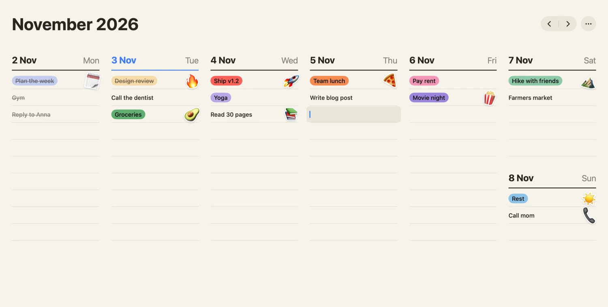
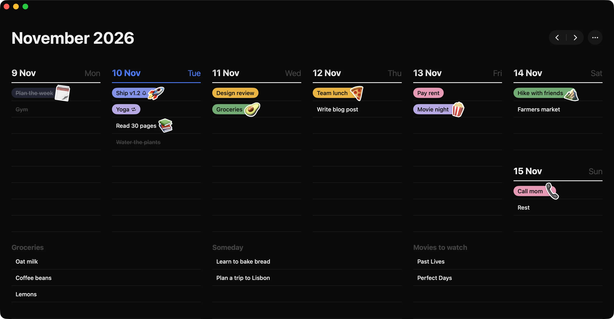
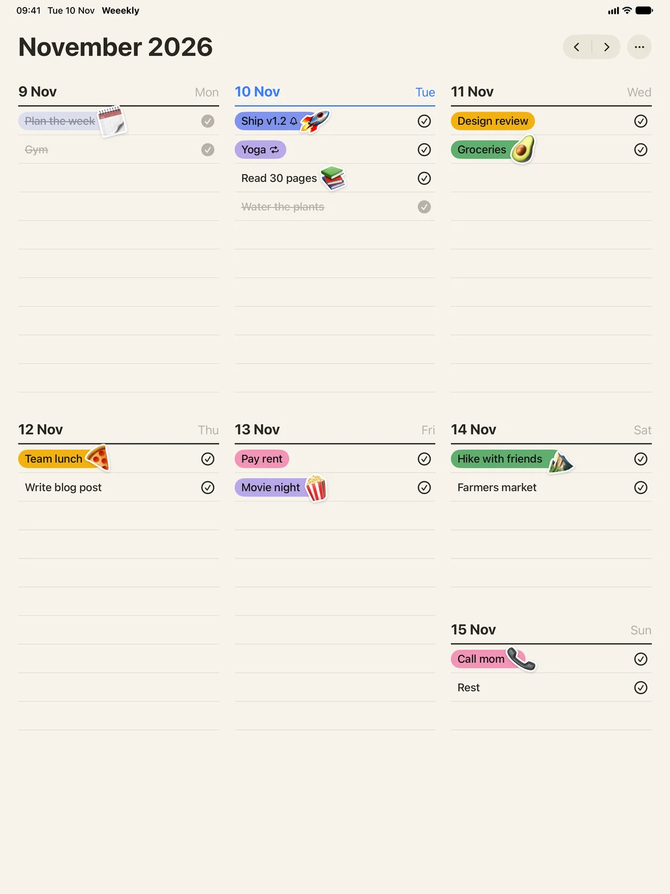
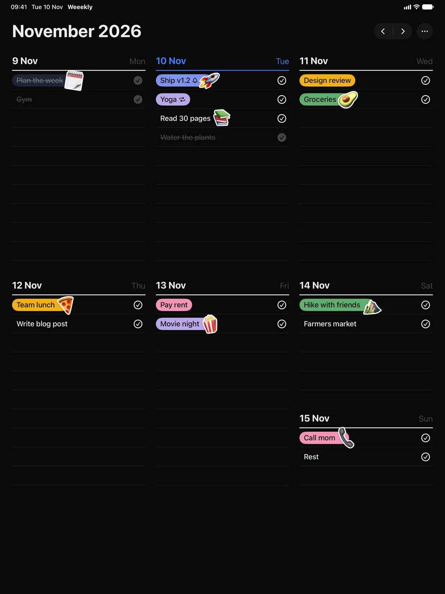
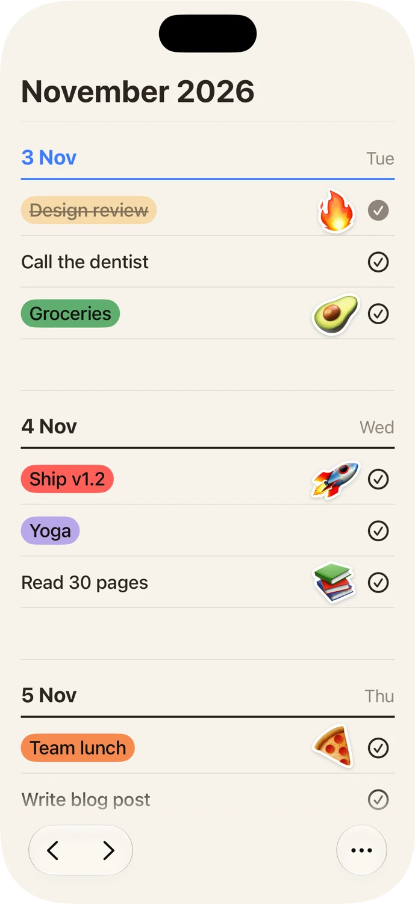
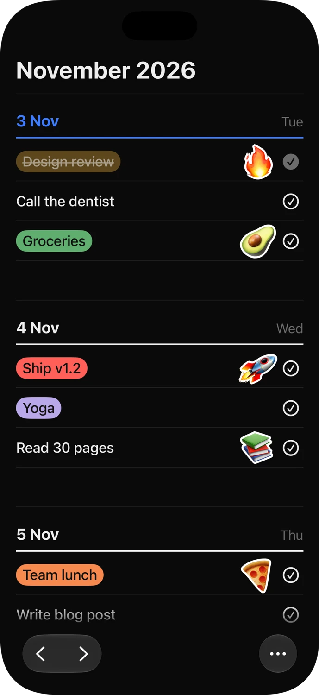

Mac · iPad · iPhone · Apple Watch
Your whole week, at a glance.
Then go outside.


Seven days. One page.
No inbox, no backlog, no guilt.
Weeekly gives you a paper-like week where every task lives on a day. Write it down, color it in, tick it off. That's the whole idea — and it turns out to be all you need.
Stickers. Stick an emoji on anything that deserves a little celebration.
Repeats. Gym every Monday, rent every month. Set it once.
Reminders. A gentle nudge on whichever device is closest.
iCloud sync. Private, through your own Apple Account. No servers of ours.
Dark, or warm like paper. A calm dark theme and a paper-like light one, each with a single bold blue accent. Or let your Mac decide.
Everywhere you are
One week.
Four devices.
Plan on the big screen, check things off on the go, glance at today on your wrist. Every change shows up everywhere, in seconds.




Tue 39:41
Design review
Call the dentist
Groceries
Plan the week
-
Mac
The whole week side by side. Type a task, hit Return, done.
-
iPad
The whole week on one screen. Drag a task to another day with your finger.
-
iPhone
Today first, the rest of the week below. Swipe to the next week.
-
Apple Watch
Today's tasks on your wrist. Tap to tick one off, swipe for tomorrow.
One purchase, all four apps — kept in sync with iCloud.
Lifetime access
$29
Pay once. Yours forever. No subscription.
- Mac, iPad, iPhone and Apple Watch
- iCloud sync across all your devices
- Repeating tasks, reminders and stickers
- Every future update included
One purchase unlocks every app on your Apple Account.
Questions
Is it really a one-time payment?
Yes. $29 once gets you Weeekly on Mac, iPad, iPhone and Apple Watch, including future updates. No subscription, ever.
Where is my data stored?
On your devices and in your own private iCloud account. We don't run servers and we can't see your tasks.
Do I need all four devices?
No. Weeekly works great on a single device. Every extra device you add simply stays in sync.
What happens to unfinished tasks?
They stay where you put them, and you can move any task to another day in a couple of taps — or drag it on the Mac and iPad.